is called the sample mean and μ is called population mean. The word population denotes all the numbers inside the urn.
is called the sample mean and μ is called population mean. The word population denotes all the numbers inside the urn.| Previous | Table of Contents | Next |
Statistics are like alienists —they will testify for either side.
—Fiorello La Guardia
The English words sample and example both originated from an Old French word essample. Although the two words are now distinct, it is important to remember their common root. A sample is only an example. One example is often not enough to prove a theory. Similarly, one sample is often not enough to make a definite statement about all systems. Yet this distinction is often forgotten. We measure two systems on just 5 or 10 workloads and then declare one system definitely better than the other. The purpose of this chapter is to reinforce the distinction and to discuss how to use sample data to compare two or more systems.
The basic idea is that a definite statement cannot be made about the characteristics of all systems, but a probabilistic statement about the range in which the characteristics of most systems would lie can be made. The concept of confidence interval introduced in this chapter is one of the fundamental concepts that every performance analyst needs to understand well. In the remainder of this book, most conclusions drawn from samples are stated in terms of confidence intervals.
Suppose we write a computer program to generate several million random numbers with a given property, for instance, mean μ and standard deviation σ. We now put these numbers in an urn and draw a sample of n observations.
Suppose the sample {x1, x2, . . . , xn} has a sample mean . The sample mean is likely to be different from σ. To distinguish between the two, is called the sample mean and μ is called population mean. The word population denotes all the numbers inside the urn.
In most real-world problems, the population characteristics (for example, population mean) are unknown, and the goal of the analyst is to estimate these characteristics. For example, in our experiment of measuring a program’s processor time, the sample mean obtained from a single sample of n observations is simply an estimate of the population mean. To determine the population mean exactly, we need to repeat the experiment infinitely many times, which is clearly impossible.
The population characteristics are called parameters while the sample estimates are called statistics. For example, the population mean is a parameter while the sample mean is a statistic. It is necessary to distinguish between the two because the parameters are fixed while the statistic is a random variable. For instance, if we draw two samples of size n from a normally distributed population with mean μ and standard deviation σ, the sample means 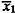 and 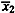 for the two samples would be different. In fact, we can draw many such samples and draw a distribution for the sample mean. No such distribution is possible for the population mean. It is fixed and can be determined only if we consider the entire population. Traditionally, the Greek letters such as μ and σ are used to denote the parameters, while the English letters such as 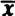 and s are used to denote the statistic.
Each sample mean is an estimate of the population mean. Given k samples, we have k estimates —all of them different. The next problem is to get a single estimate of the population mean from these k estimates.
In fact, it is not possible to get a perfect estimate of the population mean from any finite number of finite size samples. The best we can do is to get probabilistic bounds. Thus, we may be able to get two bounds, for instance, c1 and c2, such that there is a high probability, 1 - α, that the population mean is in the interval (c1, c2):
Probability{c1≤μ≤c2} = 1 - α
The interval (c1, c2) is called the confidence interval for the population mean, α is called the significance level, 100(1 - α) is called the confidence level, and 1 - α is called the confidence coefficient. Notice that the confidence level is traditionally expressed as a percentage and is typically near 100%, for instance, 90 or 95%; while the significance level a is expressed as a fraction and is typically near zero, for instance, 0.05 or 0.1.
One way to determine the 90% confidence interval would be to use 5-percentile and 95-percentile of the sample means as the bounds. For example, we could take k samples, find sample means, sort them out in an increasing order, and take the [1 + 0.05(k - 1)]th and [1 + 0.95(k - 1)th element of the sorted set.
Fortunately, it is not necessary to gather too many samples. It is possible to determine the confidence interval from just one sample. This is because of the central limit theorem, which allows us to determine the distribution of the sample mean. This theorem states that if the observations in a sample {x1, x2, . . . , xn} are independent and come from the same population that has a mean μ and a standard deviation σ, then the sample mean for large samples is approximately normally distributed with mean μ and standard deviation 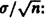:
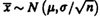
The standard deviation of the sample mean is called the standard error. Again, the standard error is different from the population standard deviation. If the population standard deviation is σ, the standard error is only 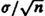. From this expression, it is easy to see that as the sample size n increases, the standard error decreases.
Using the central limit theorem, a 100(1 - α)% confidence interval for the population mean is given by
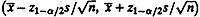
Here, is the sample mean, s is the sample standard deviation, n is the sample size, and z1-α/2 is the (1 - α/2)-quantile of a unit normal variate. Since these quantiles are used very frequently, their values are listed in Table A.2 in the Appendix.
 = 3.90, the standard deviation s = 0.95 and n = 32:
= 3.90, the standard deviation s = 0.95 and n = 32:
We can state with 90% confidence that the population mean is between 3.62 and 4.17. The chance of error in this statement is 10%. That is, if we take 100 samples and construct a confidence interval for each sample as shown in Figure 13.1, in 90 cases the interval would include the population mean and in 10 cases the interval would not include the population mean.
Similarly,
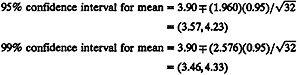
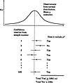
FIGURE 13.1 Meaning of a confidence interval.
The preceding confidence interval applies only for large samples, that is, for samples of size greater than 30. For smaller samples, confidence intervals can be constructed only if the observations come from a normally distributed population. For such samples, the 100(1 - α)% confidence interval is given by

Here, t[1-α/2;n-1] is the (1 - α/2)-quantile of a t-variate with n - 1 degrees of freedom. These quantiles are listed in Table A.4 in the Appendix. The interval is based on the fact that for samples from a normal population 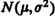, 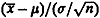 has a N(0, 1) distribution and (n-1)s2/ has a chi-square distribution with n - 1 degrees of freedom, and therefore, 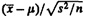 has a t distribution with n - 1 degrees of freedom (see Section 29.16 for a description of the t distribution). Figure 13.2 shows a sample t density function; the value t[1-α/2;n-1] is such that the probability of the random variable being less than -t[1-α/2;n-1]is α/2. Similarly, the probability of the random variable being more than t[1-α/2;n-1]. The probability that the variable will lie between 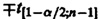 is 1-α.
has a chi-square distribution with n - 1 degrees of freedom, and therefore, 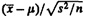 has a t distribution with n - 1 degrees of freedom (see Section 29.16 for a description of the t distribution). Figure 13.2 shows a sample t density function; the value t[1-α/2;n-1] is such that the probability of the random variable being less than -t[1-α/2;n-1]is α/2. Similarly, the probability of the random variable being more than t[1-α/2;n-1]. The probability that the variable will lie between 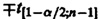 is 1-α.
The ratio 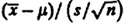 for samples from normal populations follows a t(n - 1) distribution.
| Previous | Table of Contents | Next |
){kind=link}
){kind=link}
){kind=link}
){kind=link}